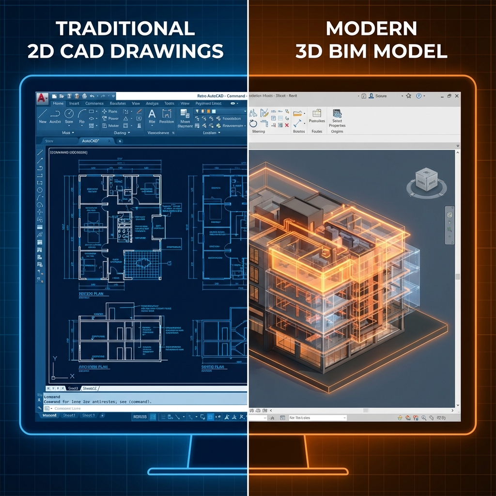

🆚 الفارق الأساسي
CAD (Computer-Aided Design): أداة للرسم الرقمي تُنتج خطوطاً وأشكالاً هندسية.
BIM (Building Information Modeling): نظام متكامل لإنشاء نموذج ذكي يحتوي على بيانات هندسية ووظيفية ومادية.
تشبيه بسيط: CAD كرسم صورة للمبنى، BIM كإنشاء نموذج مصغر حقيقي يحتوي على كل المعلومات.
📊 جدول المقارنة الشامل
| المعيار | CAD | BIM |
|---|---|---|
| نوع الملف | خطوط وأشكال (.dwg) | عناصر ذكية (.rvt, .ifc) |
| البيانات | هندسة فقط | هندسة + مواد + تكلفة + زمن |
| التحديث | يدوي لكل لوحة | تلقائي عبر النموذج |
| التنسيق | overlay يدوي | Clash Detection آلي |
| حصر الكميات | يدوي من الرسومات | تلقائي من النموذج |
| التعاون | تبادل ملفات | نموذج مشترك |
| التصور | 2D أساساً | 3D تفاعلي |
| دورة الحياة | تصميم فقط | من التصميم للتشغيل |
🔍 مثال عملي: تغيير ارتفاع الدور
في CAD:
- تعديل المسقط الأفقي
- تعديل كل القطاعات يدوياً
- تعديل الواجهات
- تعديل جداول التشطيبات
- إعادة حساب الكميات
في BIM:
- تغيير ارتفاع الدور في النموذج
- تحديث تلقائي لجميع اللوحات والكميات
📐 متى تستخدم CAD؟
- مشاريع صغيرة جداً (فيلا صغيرة)
- رسومات 2D بسيطة
- التوافق مع جهات لا تستخدم BIM
- ميزانية محدودة للبرامج
- تفاصيل إنشائية بسيطة
🏗️ متى تستخدم BIM؟
- مشاريع متوسطة وكبيرة
- مشاريع معقدة (MEP متشابك)
- متطلبات تعاون عالية
- حاجة للحصر الدقيق من النموذج
- متطلبات تعاقدية تشترط BIM
- مشاريع حكومية في دول تلزم BIM
💰 تحليل التكلفة
| البند | CAD | BIM |
|---|---|---|
| تكلفة البرنامج | أقل | أعلى |
| تكلفة التدريب | أقل | أعلى |
| وقت الإنتاج الأولي | أسرع | أبطأ |
| إعادة العمل | أعلى | أقل بكثير |
| التنسيق | مكلف | موفر |
| ROI طويل المدى | محدود | عالي |
🔄 الانتقال من CAD إلى BIM
- ابدأ بمشروع تجريبي صغير
- درّب فريقاً محدوداً أولاً
- لا تتوقع نتائج فورية
- استخدم CAD و BIM معاً مؤقتاً
- اختر البرنامج المناسب لنوع مشاريعك
المقال التالي: فوائد BIM للمالك والمقاول والاستشاري